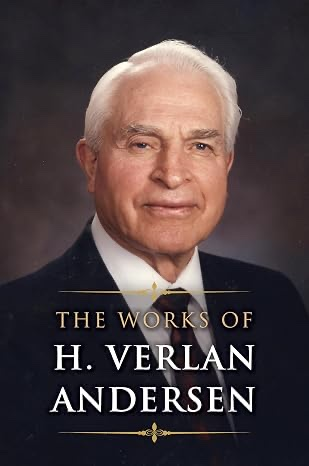

One volume, and a lifetime of thinking behind it. Hans's father spent his life writing about the proper role of government — and Hans helped his family gather that work into a single collection. It is the intellectual root of the principles Hans has argued for ever since.

H. Verlan Andersen — attorney, BYU professor, and later a General Authority of the LDS Church — was Hans's father. He spent his life arguing one idea from every angle: that government is organized force, that such force is only justified to protect life, liberty, and property, and that every citizen is personally accountable for what government does with their vote.
His family gathered his most widely read books into this single volume, with Hans helping to compile it. It brings together the writing he is best known for, including Many Are Called But Few Are Chosen (1967) and The Great and Abominable Church of the Devil (1972).
The framing is religious and was written for a Latter-day Saint audience. The political core beneath it — limited government, property as the fruit of a person's labor, power that grows unless somebody is watching — is the compass Hans has carried into every budget hearing since.
Over the years Hans has made his case in letters to the editor, public comment, and on the radio — always with the same goal: give people the other side of the story so they can decide for themselves.